Offline Website Creator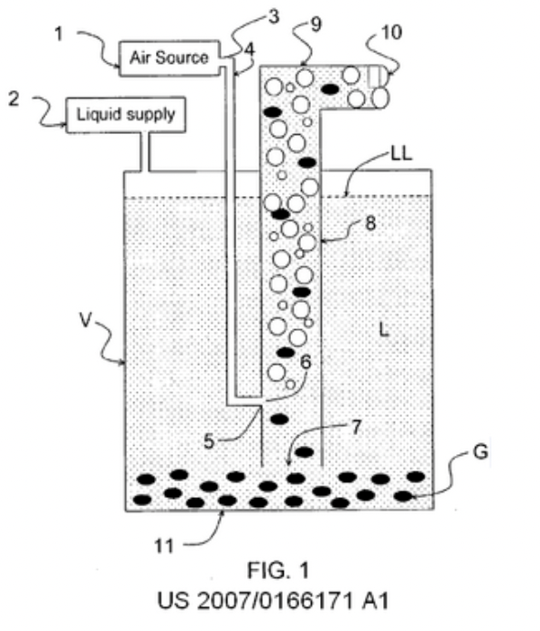
diagram via wiki
a bubble pump or in more loose terms a "airlift pump"
is "a device that raises fluid by injecting compressed air into the bottom of a submerged discharge pipe. This air mixes with the liquid, creating an air-water mixture that is less dense than the surrounding water, causing the mixture to rise through the pipe via buoyancy and displacement" wiki
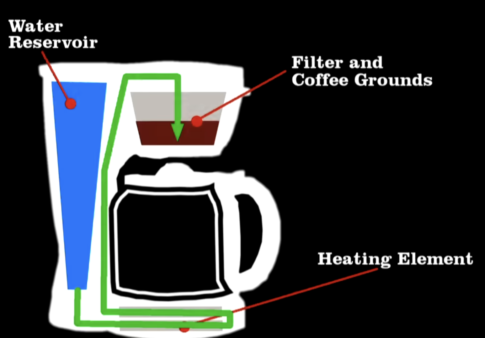
as previously stated "airlift pumps" are the more general term, so what differs about specifically bubbles pumps? well as commonly used bubble pumps use heat to generate motion, not through a more simple principle like thermosiphon but by turning the working fluid into a gas and using that as the lifting gas. this means that if had water at a low level of height by heating it above it's boiling point i could turn some of that water into steam, which thereby directly lifts the water upwards. so we can turn heat directly into gravitational energy, without any mechanical or clear wear elements like a motor.
keep in mind these unlike thermosiphon or ram pumps CAN move ALL fluid above the initial height give enough energy
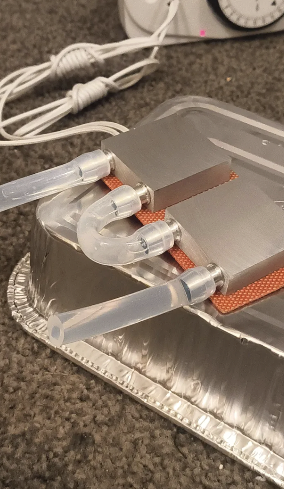
photo of the heating element sitting in contact with the metal blocks that have water running through them
Alright we've got the general idea now let's put it to work
some final things to note in order that are needed for the bubble pump to operate and one caution
1. you will need a initial height in order to achieve real results with a bubble pump system, this may make the whole system seem pointless as if we need a height to gain height nothing has changed. but the initial height is really to help in the rapidly replacement of the fluid and start the flow, with the final height still being much higher then the initial height so we have gain energy from the parcel boiling of the fluid.
2. you will need a one way valve BEFORE the point at which water is heated. this is because if you imagine a U shaped tube where gas is rises up from a base, you can see then the back pressure is applied evenly. but if add a one way valve to one side then the net flow of the gas will be obvious and the head from the initial height will help to have some pressure and rapidly replace the fluid that is lifted.
a caution, if a one way valve is placed AFTER the the point at which waters has in part turn to steam then there will be a exchange that results in ONLY steam ejecting after that point, this is effectively a steam line and if done incorrectly enough can be practically dangerous as steam temps can exceed far above it's initial 100 degrees.
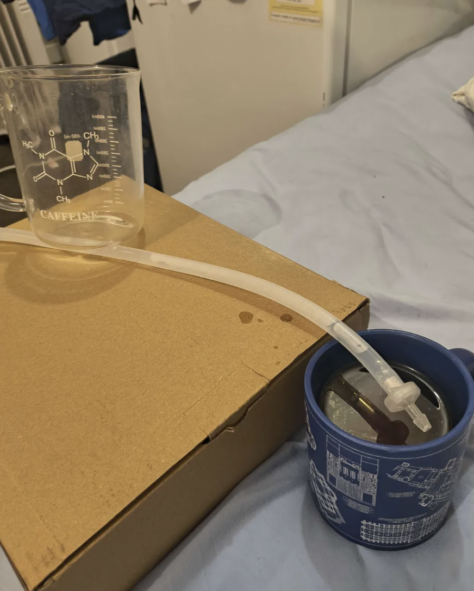
photo of our mug of tea at a elevated height above both the initial height and the height where the water is heated
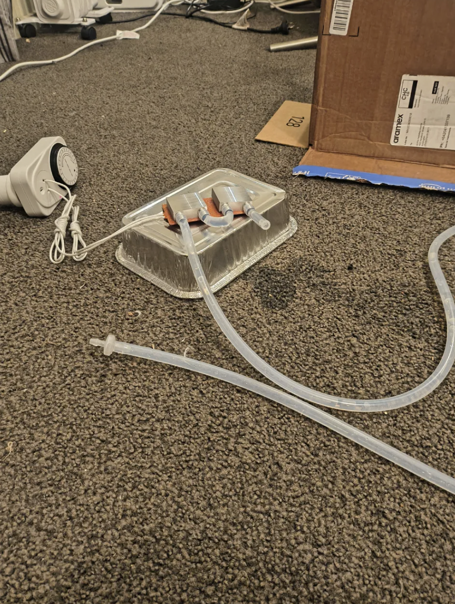
photo of the general heating area showing the intake tube with a check valve (not currently setup above the area of heat)
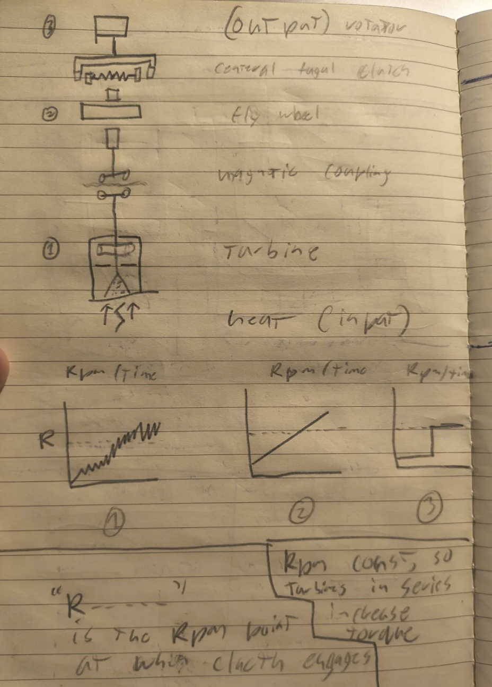
notebook photo of the general "stack" of power flow
my idea is to have the water run through a central funnel, this will up the built up steam bubbles to as a a bubble pump lifting both the steam and the water up the turbine. which will then be ejected at two opposite tangential angles, resulting in rotation. this rotation will be induced through a magnetic rotator to help keep the water within the system and also help contain the temp. bubble pumps are a very cyclical process so when thinking in terms a stable mechanical power or stable electrical generator, it's a good idea to use a fly wheel to help balance out the minor variations. i also plan to use a centrifugal clutch so when power is building initially at low rpm ranges we can rapidly buildup the motion, and leads to a overall faster "startup time" from cold start.
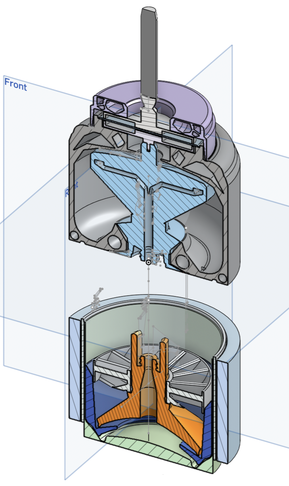
Image showing a side cut view of the model
as you can see from one of the first models of the system consists of a upper "head" in the shape of a T that splits the stream of fluid from the bubble pump area in two. these are at two opposite tangential angles, resulting in rotation. there is also the magnetic coupling area near the top wear a metal bearing (not shown) is placed. this allows for both the magnetic rotor to spin. freely but also lifts up the head and the bubble pump section reducing friction in all areas. the design is mostly 3d printed apart from the two bearing for each magnetic rotor, the silicon pipe connecting the tube, and also the area where heat is focused which uses a common soda can that has been cut in half (shown in green). Other areas of note include the lower blades (gray) which help gain extra rotation based on the water falling back down, and the focus cup (dark blue) which helps to focus the bubbles up the tube and also keep the tube within the correct area as it rotates.
(the flywheel and centrifugal clutch not yet developed)
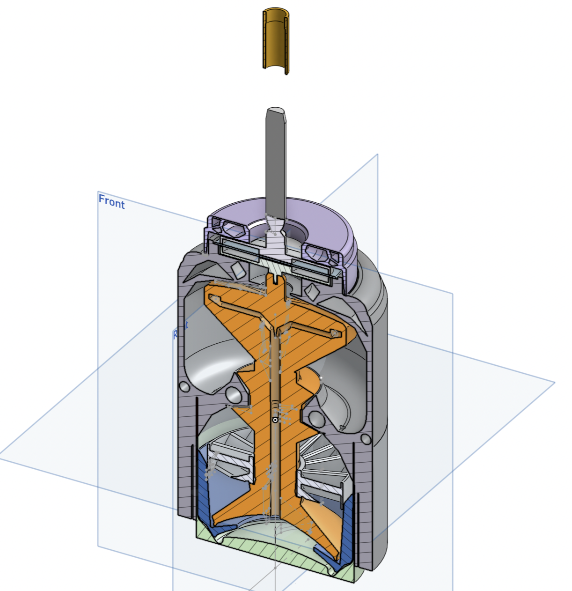
I truly have made too many adjustments over time to state and have ran hundreds of test prints and hundreds of hours remodeling. I also don't really have a lot of photos from this period in development so it's best for me to keep this short and sweet. here is the model as it currently stands.
initially i had it such that the pump tube was connected by some silicon tubing, but i found that far too unreliable under heat. what seemed to happen was the connection areas would deform slightly and as that was typically uneven it would allow the seal to loosen and then water to rush out, stopping the bubble pump process into the upper head. so i switched into making the tube (orange) and casing (gray) into one large print that could be printed as one so no two piece design that required tubing was needed.
I also did development on the flywheel (images on next page) the flywheel was a extremely hard but interesting process to develop. i used a PIP planetary gearbox that had a outer to inner ratio of 1:3 i modeled is such the shaft of the bubble pump would interlock with a shaft in the middle of the flywheel at the same time it would inter act with the outer planetary gear shifting it from to 3 times it's initial rotation. this faster inner gear then becomes the outer gear of the 2nd layer due to some complex geometry (green), finally the inner gear of the second layer (now at 9:1 relative to the bubble pump shaft) interacts with the mass block (orange). the mass block acts as the mass that is rotated to help balance out the variable rotation. it works by having many channels within it, these channels are then filled with water (basically "free" mass to save on filament) and then the mass block is spun up. notice the that initial bubble pump shaft (gray_ still runs all the way upwards, that means we can still use it totally normally but just get that extra stabilization based on the flywheels rotating mass.
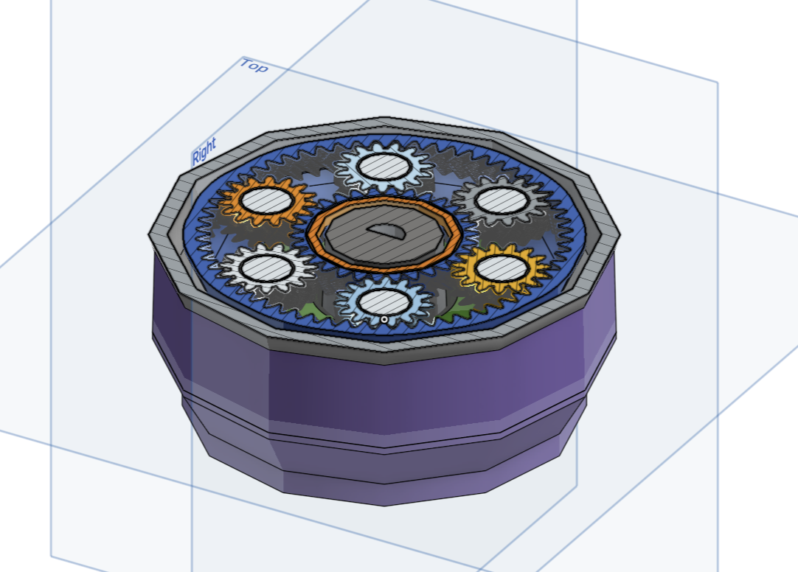
Top cut view of the flywheel system
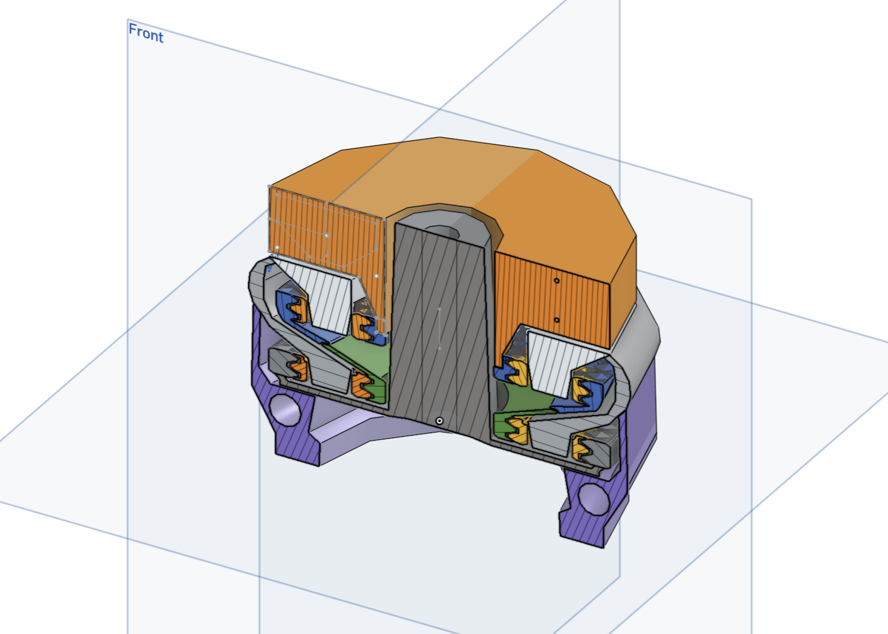
Side cut view of the flywheel system
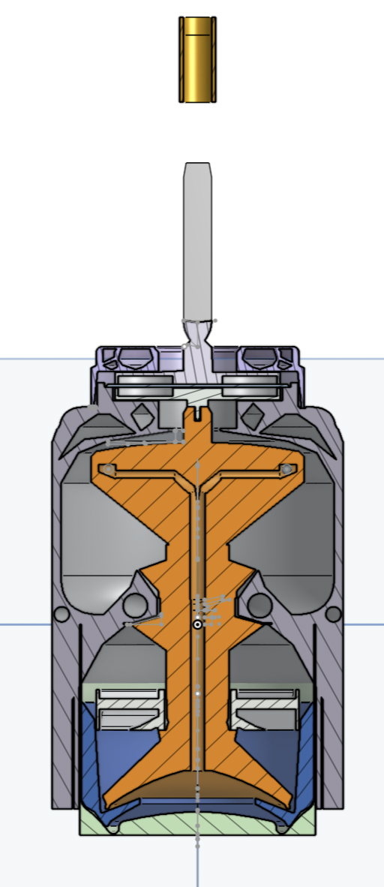
my biggest issue has been trying to safely focus a stable heat source into the area such that it can result in bubbling. I do not have a lab grade heat plate at the moment, so my primary method was using candles alongside a kettle. i would bring the water to an initial boil and then use a candle to try and bring bubbles to a boil after tens of trails i couldn't get the formation i needed.
i also tried utilizing the heating elements of a kettle and placing the entire system top of it hoping the water would be heated through the can and create the steam bubbles but while it was close it was just a small layer of bubbles aheared to the surface that had no effect.
i think nichrome or induction heating would be the best for testing but i do not have a high induction heating system and while i do have nichrome i don't have the ability for electrical insulation to stop shorts.
one thing to note is that the bubble effect using my tube design did work great, i tested it several time using just a standard kettle catching the bubble it produced above it's heating element and while the tube didn't rotate well it did pump water into the upper area with ease.
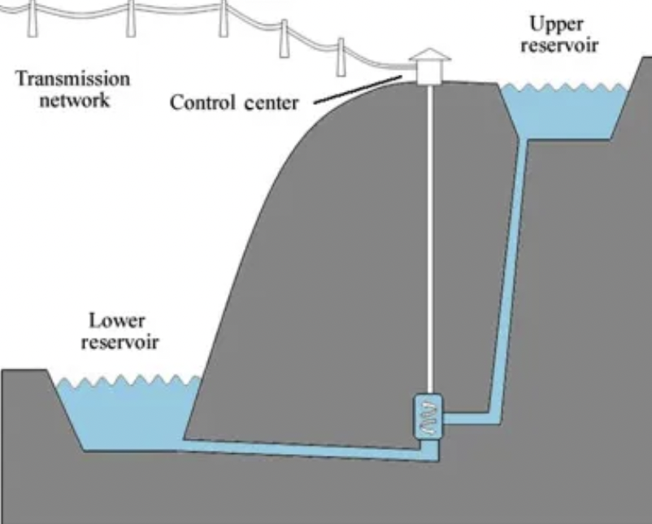
online photo of a hydroelectric system that shows the concept of head and how it relates to height and power
the "head" as defined by the distance water travels in a hydro system would be 127.9 mm in my model for a bubble pump
based on previous testing i get very loosely about 10g every bubble pump cycle (about 4 seconds)
i'd estimate the maximum i could get out of this system would be about half recovery on the force required for lifting the water up from the rotation, and all the potential on the way down, so what would be about
(0.19185mm *0.010 kg * 9.81 )/ 4 seconds
gives me only 4.71 milliwatts as a point of power i think with a good boil you could get it up too 38 mW
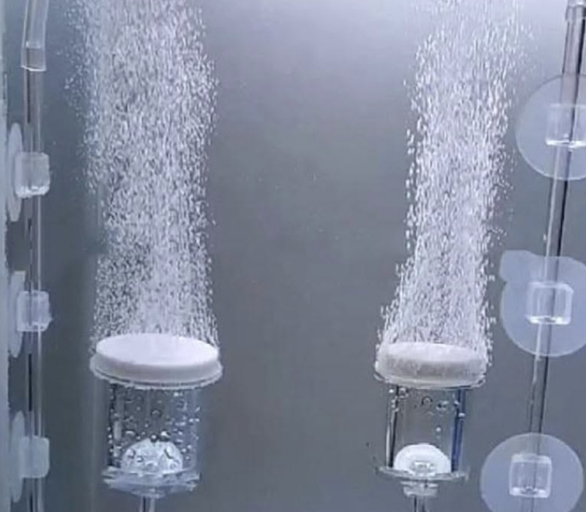
photograph of a airstone producing bubbles found online
This project has been an amazing test of modeling skills over hundreds of hours and i have learned so so much reading about steam turbines and systems in general. i think i am going to pause it for now and focus on projects that are showing a lot more promise in progression.
if i did dive into a part 2 i would try to pump bubbles like a airstone into the area just below the tube and see if i can get it spinning using only that airlift, without the dangerous of steam just to see i can get it working in that know condition before reintroducing the steam. or perhaps producing the steam somewhere else and then bubbling it out at the bottom of the tube.
it would also be a great thing to get metal 3d printed but as that cost $100-200 to get even just 1 model to test that is not in the cards at the moment.
Offline Website Creator